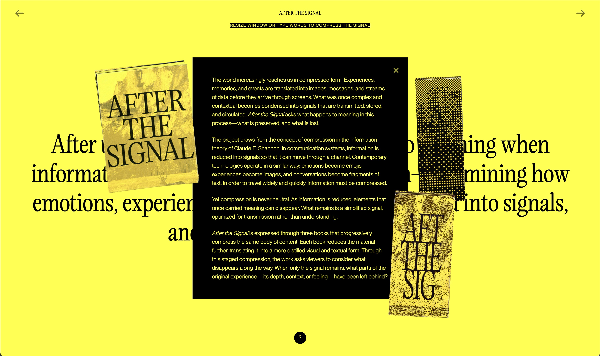

Website
After the Signal

May 2026
Creative Coding
Creative Coding
After the Signal is live on site. I explored the digital format to experiment more with the concept of compression in many different ways.
1. It compresses when you resize the window or type something. Adding information leads to glitches and noise happening.
2. Camera recognizes your face and compresses your identity. It shows your approximate age, sex, and facial expression.
3. When you upload contents such as text or image, it becomes signal.
+ When you're inactive for 1 minute, the website compresses its screen into pixels.
1. It compresses when you resize the window or type something. Adding information leads to glitches and noise happening.
2. Camera recognizes your face and compresses your identity. It shows your approximate age, sex, and facial expression.
3. When you upload contents such as text or image, it becomes signal.
+ When you're inactive for 1 minute, the website compresses its screen into pixels.
